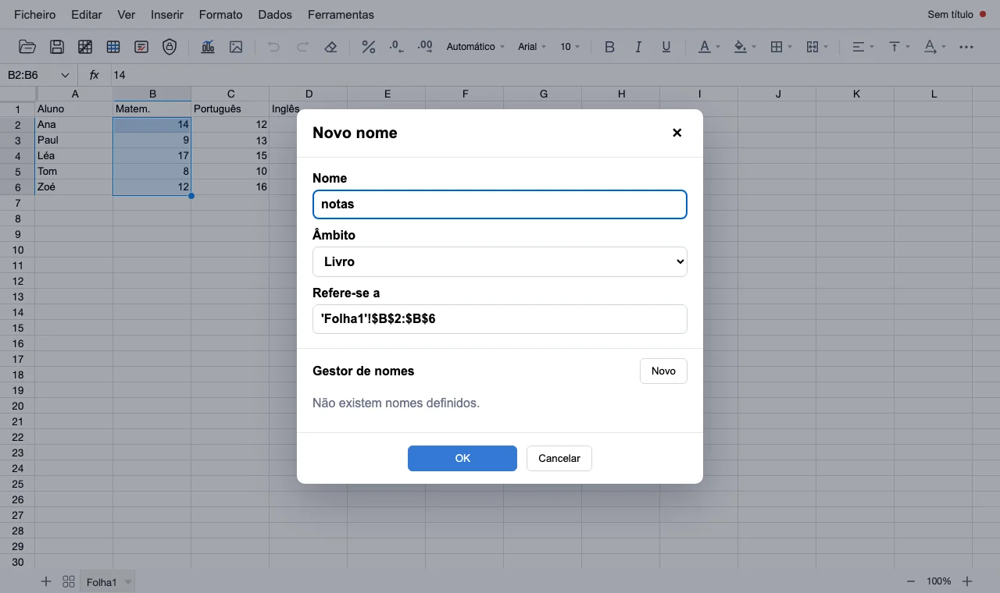

Intervalos com nome
Dar um nome
- Selecionar a célula ou o intervalo.
- Clique direito › Definir nome… (ou a seta da caixa de nome › Gestor de nomes).
- Escrever o nome, escolher o âmbito, OK.

| Campo | Conteúdo |
|---|---|
| Nome | começa por uma letra ou _; letras, algarismos, _ e ., sem espaço; não um endereço como B2 |
| Âmbito | Livro: lido de todas as folhas; uma folha: lido só dela, onde prevalece sobre um nome do livro |
| Refere-se a | uma célula ou um intervalo, com a sua folha: 'Folha1'!$B$2:$B$6 |
Usar um nome
=MÉDIA(notas)
=preco*(1+iva)- A seta da caixa de nome lista os nomes: escolher um seleciona o seu intervalo, na sua folha.
- Quando a seleção é exatamente um intervalo com nome, a caixa de nome mostra-o.
- Uma lista pendente pode ler um intervalo de células, indicado pelo seu endereço.
Modificar, eliminar
No Gestor de nomes, clicar num nome repõe os seus campos em modificação; Eliminar elimina-o; Novo volta a um nome vazio. Antes de eliminar um nome, substituir as fórmulas que o leem: conservam o último valor e depois deixam de se calcular.
Os nomes são guardados no ficheiro Excel e lidos dele.